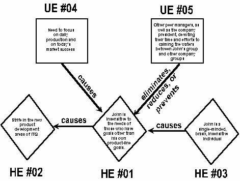

|
by Introduction. The oldest living system on earth that attracts the broadest interest is the vast system of human beings. The multi-colored array of human relations forms a network of human interactions that has been under study since humans first walked the earth. The success rate in increasing the effectiveness of human relations has been less than satisfactory. One reason for this lack of success is a lack of subject matter expertise in human psychology. A second reason is the lack of an effective process for moving from vague problem descriptions or problem situations to a specific model of the core, or main, problem to be addressed. A further reason is the lack of creative solutions. Of these three reasons for the general ineffectiveness of achieving sound solutions in the realm of human relations, the lack of an effective problem-definition process, and a creative solution approach, have stymied creative approaches to such problems. In the field of human relations, certain enlightened, problem-solving individuals have appeared from time to time; their works were turned into a "latest recipe of the day," and then that recipe replaced by yet another recipe. No general theory and practice ever emerged. The TRIZ Approach. The approach called TRIZ came to the western world in the late 1980’s from Russia, where it was primarily used to creatively address problems and challenges associated with technical systems. TRIZ is the Russian acronym for "Theory of the Solution of Creative Problems." Today in the USA and in other western countries, TRIZ has been strategically adopted by forward-moving organizations as the concept-generating tool of the century. Little is known, however, about the power of the TRIZ approach for significantly improving human relations - including the key functions of leadership and management. Case Study John’s an Effective but Really Brash Guy. The President of IsoTech Quadratics knew that, in order to keep the number one product line of ITQ moving, John was the person to do it. That’s why John got the job as Vice President of ITQ’s main product line. There was no one more active, no one more focused on what had to be done, than John. The saying "John pulls no punches," had a special meaning to those who worked for him. He’d look you straight in the eye and ask the question that you knew - sometimes you dreaded - he would ask. "Why is that line down?" or, "What’s the problem?" or, "What are you doing about it?" John’s way of "quickly getting to the heart of the matter" gained him the respect of corporate leaders, including the President of ITQ. But John also had other qualities. In a nutshell, he was brash, insensitive, undiplomatic - sometimes even a social embarrassment. Yet he could never see himself in a mirror as being brash and insensitive to others. His recent manners and behavior at a local restaurant, where he became intrusively obnoxious with a female waitress during order-taking, was just one case in point. But his same brash treatment of an R&D department manager had led that valuable individual to leave the company and move to a competitor. John was a "Let’s get the job done" person, but he lacked the patience, vision and human sensitivity required to fully accomplish his role. His value to management was that he kept the production line moving. He attracted others like himself - soon his group had become quite polarized. There were employees who were like John, who imitated and copied his ways; and there were the others who either couldn’t stand him, or who would rather avoid his presence. The latter group was far less effective than they could have been without John’s constant brashness overpowering every situation. This brief description represents the problem situation. This problem was not only the President’s problem. It was a problem for ITQ as a whole. On the one hand, John was needed by the company because he and his people kept the production line running. On the other hand, not only was he not nurturing and promoting others - he was, in fact, destroying ITQ’s future product possibilities through his power-based treatment of staff members from ITQ’s research and developmental areas. Not to mention the fact that employees from other divisions in the company dreaded bumping into him or his people. Useful and "Harmful" Events Flow Chart. The TRIZ approach begins either with a useful or a harmful event description, and solicits information about that event. For the harmful event description, this information can be expressed in the form of questions: What harmful event or action is caused by it? What harmful event or action causes it? What useful event or action causes it? What useful event or action eliminates, reduces or prevents it? The flow diagram illustrated below addresses the key harmful event, "JOHN’S INSENSITIVITY CAUSES PROBLEMS WITH THOSE WHO HAVE GOALS OTHER THAN HIS OWN PRODUCT-LINE GOALS." The flow chart indicates that this "harmful" event causes "Strife in the new-product development areas of ITQ." Additionally, there are two events that relate to John’s harmful activities in a causal way: a harmful action, "John is a single-minded, brash, insensitive individual," and a useful action, the "need to focus on daily production and on today’s market success." Another block in the flow charts is in place to eliminate, reduce, or prevent John’s harmful effects on the organization: "Other peer managers, as well as the company president, devoting their time and efforts to calming the waters between John’s group and other company groups."  Two Goal Statements for the problem "JOHN’S INSENSITIVITY CAUSES PROBLEMS WITH THOSE WHO HAVE GOALS OTHER THAN HIS OWN PRODUCT-LINE GOALS," are expressed below.
A close examination of these goal statements reveals that they have been very well thought out. The second goal statement (statement # 2) is about "turning lemons into lemonade." It recognizes the fact that John single-mindedly and selfishly focuses on his own concerns: getting his product line out. And it asks the problem-solver to look for ways to turn this situation into an advantageous one. The first goal statement is more direct. It seeks a way to get rid of the results of John’s insensitivity and bull-headedness, without taking up the valuable time and efforts of the President and other corporate managers. It also recognizes the need to continue to focus on daily production, and - most importantly - it recognizes the foolishness and ineffectiveness of proceeding along a path of attempting to change John’s personal characteristics. Such characteristics have been indelibly inscribed upon John’s personality over many years. One key advantage of this flow-chart template is that it (1) puts the whole picture in perspective, showing the causes, the effects, and even the systems that are in place to eliminate the harmful effect in question. Another advantage is that it (2) forms goal statements that recognize all related actions and events, while dealing intelligently with each of them. TRIZ Problem Definition. Most problems worthy of being called "problems" have within them at least one major conflict. In the present case study, the conflict can be expressed as follows: Conflict "John channels all resources under his control towards meeting his group’s goals, but he does this accompanied by an intimidating style that demoralizes and renders ineffective other organizational goals." This is a typical conflict: An useful action taken to address a worthy goal (IMPROVING FEATURE), causes a deterioration of something else (WORSENING FEATURE). When a problem is stated in this fashion - as a conflict between two conflicting features or events, the types of solutions that come to mind involve tradeoffs or compromises, in which nobody is really satisfied, and which do not really solve the problem. For example: Ineffective Tradeoff Solution Give John sensitivity training to make him a little more sensitive, while training others in the company on "How to get along with difficult people." On the other hand if we frame the problem as a "physical contradiction," we take the first step towards a solution that will accept no tradeoffs or compromises: Physical Contradiction "John has to be ‘in charge’ and not ‘in charge’." In other words, John must be in charge of his product line, because he needs to make sure that orders get produced and delivered on time. But John must not be in charge of his product line, because he views his responsibility as overseeing all other activities in the company, and his brash style adversely influences personnel connected with these other activities. Such a formulation of the solution is akin to what is called the "Ideal Final Result" in TRIZ. This "IFR" serves as a guidepost that must be satisfied by any solution. Furthermore, the TRIZ approach emphasizes solutions that "come from inside the system, using system resources," rather than solutions coming from the outside, and thereby making the system more complex, more costly, and taking up valuable time (i.e., the solution involving sensitivity and other training). Solutions from the TRIZ Toolbox. The TRIZ "toolbox" is full of solution techniques. It is not the purpose in this brief paper to move exhaustively through all of them. Instead, a few of them will be discussed for purposes of illustrating the power of TRIZ. Along with each of these will be some actual solutions. Separation in Space. This solution technique asks the problem-solver to "separate the conflicting elements in space (i.e., by locating them in different places)." This suggests granting responsibility for each of the conflicting tasks to different people located in different parts of the organization. John should remain in charge of the production aspects of his own product line, but someone else (an R&D manager) should be responsible for R&D. In this way, John’s efforts are dedicated to what he does best: getting product out. The other individual is dedicated to new product R&D. John’s irritable manners may reach this individual, but the individual will have enough "tough skin" to shake off John’s criticisms, making his/her own decisions about R&D. Note: a good R&D manager will listen carefully to people like John, who they should view as one of their several internal customers. Similarly, the procurement, marketing and other organizational segments will be responsible for their areas. Separation in Time. This solution technique asks the problem-solver to "separate the conflicting elements in time (i.e., by assigning them to different time periods)." This also suggests granting responsibility for each of several sequential (or even concurrent) conflicting tasks to different people located in different parts of the organization. John should remain in charge of the production aspects of his own product line, but someone else (an R&D manager) should be responsible for activities such as R&D, procurement, and marketing, that precede product production. Creative Principles. There are 40 creative principles (also called "inventive principles") that can be applied to the objects and actions that make up a given function. The result of such application is a creative solution. For example, one of the 40 creative principles is the "Takeout" principle, which suggests that the problem-solver "remove all but the one and only important part or property from the ‘object,’ leaving in place that part or property in place." This might be interpreted as: Takeout Principle "Leave John in charge of production." Take away his other responsibilities, assigning them to others." Yet another creative principle is the "Preliminary Anti-Action" principle, which puts in place a mechanism or object that anticipates harmful effects, and is ready, in advance, to take care of them, should they arise." This creative principle might be interpreted into the following solution: Preliminary Anti-Action Principle "The President has a standard reply to any one who comes to him, complaining about John: ‘You’re in charge, and you are responsible for your own area. Now how can I help you?’ " In fact, the President regularly reminds everyone in charge that they, and only they, are in charge, and that they are also responsible to each other for the healthy running of ITQ. Another creative principle is the "Blessing in Disguise" principle, which states that a harmful effect can be turned into an advantage, or into a useful effect: Blessing in Disguise Principle "By placing total responsibility on John for his product-line production, and by not having him responsible for areas outside his domain, John is able to focus his and his group’s efforts on what he and they do best - unbothered by other tasks that are the responsibilities of other managers throughout the company." Another inventive principle is the "Intermediary" principle, which suggests placing an "intermediate object" between two interacting objects: Intermediary Principle "Appoint a program manager, responsible to the President, for each major product line in the company. John and his group are now supporting this program manager." The Evolution of Systems. According to the TRIZ approach, there is a universal path followed by all systems as they evolve towards "ideality." The steps on this path include various creative solution prompts, which when applied, will lead to an improved system. For example, one very "high" step is called "Trimming." Trimming suggests that the problem-solver remove an object from the system, and offers various ways that the system can be improved by such removal. One way is to ask one or more of the remaining objects left in the system to take over the functional responsibilities of the object that has been removed. One solution interpretation for the present case study: "Remove John from his position, and assign it to another product-line manager, or to a projectized manager who is in charge of all aspects. This new person does not have the undesirable characteristics that John has." Solution Selection. There are several solutions to this problem, other than those mentioned above. Not all solutions are as good as others. The "best" solution is often some combination of several other solutions. Furthermore, there is a very effective TRIZ approach called "ARIZ" which is a step-by-step procedure that hones in on the ideal solution, often making that solution transparently obvious merely by the problem-definition statement itself. Using well known solution-selection techniques such as "Pugh Analysis," the problem-solver can quickly consider the plusses and minuses of individual solutions, relative to some "datum" solution, and recommend the best solution, considering all important ITQ requirements. Summary. The TRIZ approach is a powerful yet creative approach for solving problems and for addressing difficult situations in human relations. Its strength lies both in (1) its ability to state solution goals, and (2) its ability to identify high-level solutions to complex problems. It handles problems involving human psychology, interpersonal relationships, and processes in which human beings may or may not be participating. Its solutions emphasize system simplicity, reduced cost, and reliability - achieved by using the resources available within the system, rather than having to go outside of the system seeking answers. The TRIZ approach is also the most powerful and creative approach for solving technical problems related to products, product lines and manufacturing processes. A little known, but very leveraged use of TRIZ is to use it to accurately predict the development of any product or technical system for the future, and then to achieve any such developments in just months and years. All of these uses of TRIZ have been verified by the Leonardo da Vinci Institute and by the author in the world’s most prominent companies. ~~~~~~~ |